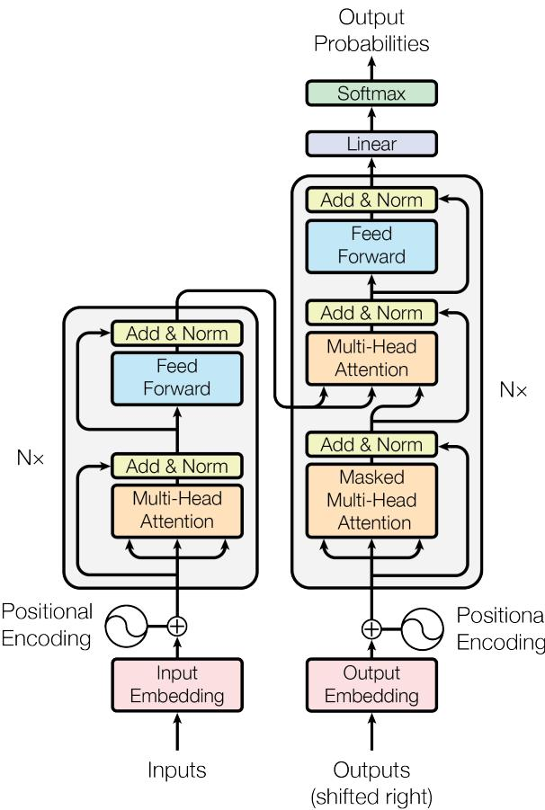
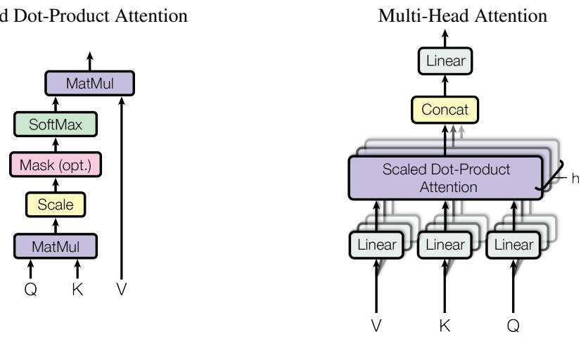

Attention Is All You Need 通俗讲解#
0. 整体创新点通俗解读#
痛点直击
- 之前的 RNN/LSTM 模型在处理序列时是严格串行的。
- 计算 $h_t$ 必须死等 $h_{t-1}$ 的结果，导致 GPU 极度擅长的并行计算能力被完全浪费。
- 面对长文本时，信息必须沿着时间步一步步传递，网络层数加深导致长距离依赖极难学习。
- 训练成本极其高昂，动辄数周甚至数月，算力消耗巨大。
通俗比方
- RNN 就像接力赛跑，第一棒跑完第二棒才能跑，哪怕你有八条跑道（多核 GPU）也只能干看着。
- CNN 就像拿着望远镜看戏，每次只能看到固定窗口大小的一块，想看远处的剧情得等好几幕（多层堆叠）。
- Transformer 的 Self-Attention 就像全员拉群开会，不管你坐在第1排还是第100排，任何人想跟任何人交流都是瞬间完成（$O(1)$ 路径长度）。大家同时发言，同时接收，彻底打破物理距离限制。
关键一招
- 作者并没有继续修补 RNN 的门控机制，而是直接把 RNN 这层循环结构给删了。
- 引入 Scaled Dot-Product Attention，把序列的每个位置变成 Query (Q)、Key (K)、Value (V)。
- 通过矩阵乘法 $QK^T$，让序列中的所有 Token 在一步内同时计算出彼此的关联度，彻底实现并行化。
- 为了弥补失去 RNN 带来的“顺序感”缺失，巧妙地在输入 Embedding 中直接加上 Positional Encoding（正弦/余弦函数），把绝对和相对位置信息硬编码进去。
- 为了防止 Softmax 在高维下梯度消失，在 Q 和 K 点乘后除以 $\sqrt{d_k}$ 进行缩放。

Figure 1: The Transformer - model architecture.不同层类型的复杂度与路径长度对比：
| Layer Type | Complexity per Layer | Sequential Operations | Maximum Path Length |
|---|---|---|---|
| Self-Attention | $O(n^2 \cdot d)$ | $O(1)$ | $O(1)$ |
| Recurrent | $O(n \cdot d^2)$ | $O(n)$ | $O(n)$ |
| Convolutional | $O(k \cdot n \cdot d^2)$ | $O(1)$ | $O(log_k(n))$ |
| Self-Attention (restricted) | $O(r \cdot n \cdot d)$ | $O(1)$ | $O(n/r)$ |
1. Scaled Dot-Product Attention#
痛点直击
- 之前的 Attention 机制（如 Additive Attention）用单层前馈网络计算 Query 和 Key 的兼容性。
- 这种做法在工程上“很难受”：
- 太慢：逐个计算，无法利用底层高度优化的矩阵乘法。
- 太贵：内存开销大，难以实现大规模并行。
- 如果直接换成 Dot-Product，速度飞快，但遇到致命问题：当 $d_k$（Key 的维度）很大时，点积算出的数值会随之变得巨大。
- 巨大的数值送进 Softmax 后，最大值被推向 1，其他推向 0，导致 Softmax 掉进梯度消失的饱和区，模型根本学不动。
通俗比方
- 把 Dot-Product 想象成对着麦克风说话，$d_k$ 就是说话的音量。
- 当维度低（音量小）时，音响（Softmax）能清晰放大声音。
- 当维度高（音量极大）时，音响直接过载失真，除了最大的那一声轰鸣，其他声音全被抹平了（梯度为0）。
- Additive Attention 的做法是换一个精密但昂贵的定制音响（前馈网络）。
- Scaled Dot-Product Attention 的做法极其粗暴：保留原装音响，只是在麦克风上加了一个音量衰减旋钮。

Figure 2: (left) Scaled Dot-Product Attention. (right) Multi-Head Attention consists of several attention layers running in parallel.关键一招
- 作者并没有重头设计复杂的兼容性函数，而是巧妙地在点积之后、Softmax 之前，插了一个极其简单的除法操作。
- 具体流程扭转：
- 计算 $Q$ 和 $K$ 的点积。
- 将结果除以 $\sqrt{d_k}$。
- 送入 Softmax。
- 为什么是 $\sqrt{d_k}$？假设 $Q$ 和 $K$ 的分量是均值为 0、方差为 1 的独立随机变量，它们点积的均值是 0，方差是 $d_k$。除以 $\sqrt{d_k}$ 刚好把方差拉回 1。
- 这一步“缩放”不仅保住了矩阵乘法带来的极致并行速度，还完美避开了 Softmax 的梯度陷阱。
| 对比维度 | Additive Attention | Scaled Dot-Product Attention |
|---|---|---|
| 计算方式 | 前馈网络 | 矩阵乘法 |
| 并行度 | 低 | 极高 |
| 高维 $d_k$ 表现 | 稳定 | 需缩放，否则梯度消失 |
| 工程实现 | 复杂 | 高度优化 |
2. Multi-Head Attention#
痛点直击
- 传统的单头 Attention 在处理长序列时，试图用一个单一的权重分布去捕捉所有词与词之间的关系。
- 这种做法在复杂语境下非常“难受”：模型既要关注语法结构（比如动词和主语的搭配），又要关注语义指代（比如"it"指代什么），还要关注情感色彩。
- 把所有维度的信息强行揉进一个 Attention 矩阵里，会导致严重的信息平均化。不同类型的依赖关系互相干扰，模型的有效分辨率大幅下降，顾头不顾尾。
通俗比方
- 单头 Attention 就像一个全栈工程师，前端后端运维全包，虽然能干活，但在处理复杂逻辑时容易抓不住核心矛盾。
- Multi-Head Attention 则是组建了一个专家团队：
- Head 1 是语法专家，专门盯着动词和名词的搭配。
- Head 2 是代词专家，专门负责 Anaphora Resolution（指代消解）。
- Head 3 是情感专家，只看带有极性色彩的词汇。
- 每个专家只看自己领域的信息（不同的 Representation Subspace），最后把所有人的报告拼接起来，形成对句子的全方位理解。
关键一招
- 作者并没有增加额外的计算负担去并行跑多个大模型，而是巧妙地做了一次降维打击。
- 具体操作流程如下：
- 把原本 $d_{model}$（比如512维）的 Query、Key、Value，通过线性映射切分到 $h$ 个低维子空间（比如8个头，每个64维）。
- 在这8个低维空间里，并行计算 Scaled Dot-Product Attention。
- 将8个头的输出结果 Concat（拼接）起来，再做一次线性映射恢复到 $d_{model}$ 维度。
- 这一步扭转的核心在于：用空间维度的切割换取表征视角的多样性。总计算量和单头几乎一致，但模型获得了从多个独立子空间联合关注信息的能力。
3. Positional Encoding#
痛点直击
- 之前的 RNN 是按顺序逐个吃 Token 的，天生自带时序信息，知道谁先谁后。
- Transformer 为了实现极致的并行计算，抛弃了 RNN 的循环结构，所有 Token 是同时进网络的。
- 这带来一个致命问题：Self-Attention 机制本质上是排列不变的。
- 也就是说，把“狗咬人”和“人咬狗”输入给纯粹的 Self-Attention，它算出来的注意力分布一模一样，模型彻底丧失了位置感知能力。
通俗比方
- 就像你把一盒打乱的拼图倒在桌上。
- 每块拼图（Token Embedding）上的图案很清晰，但如果你不给它们编号，你就不知道哪块该拼在左上角，哪块该拼在右下角。
- Positional Encoding 就是给每块拼图盖上一个专属的坐标戳。
- 模型在看图案（语义信息）的同时，还能看到这个坐标戳（位置信息），瞬间就能还原整幅画的结构。
关键一招
- 作者并没有去修改 Attention 的内部计算公式，也没有在网络中间插入复杂的结构。
- 而是在输入层的最底部，玩了个极简的向量加法：把 Token 的语义 Embedding 和代表位置的 Positional Encoding 直接相加。
- 为了让这个“坐标戳”好学且能泛化到更长的序列，作者没有用简单的整数 1, 2, 3...（这样数值会爆炸，且不好表达相对距离）。
- 而是巧妙地使用了不同频率的正弦和余弦函数：
- 这就像给每个位置发了一个多维的条形码。
- 每个维度的条形码粗细（频率）不同。
- 对于任何固定的偏移量 k，$PE_{pos+k}$ 都可以表示成 $PE_{pos}$ 的线性函数。
- 这意味着模型不需要死记硬背绝对位置，只要通过简单的线性变换，就能轻松推算出任意两个 Token 之间的相对距离。
4. Position-wise Feed-Forward Networks#
痛点直击
- 纯粹的 Self-Attention 机制虽然能完美捕捉全局上下文，但它本质上是对所有 Token 的 Value 进行加权求和。
- 这种操作本质上是线性的。如果模型只靠 Attention 堆叠，面对复杂的非线性映射任务时，表达能力会严重不足。
- 更难受的是，Attention 把所有人的信息揉在一起，却缺乏一个让每个 Token 独立“消化”和“升华”这些混合信息的机制。模型变成了一个只会“开会”但不会“干活”的团队。
通俗比方
- 把 Self-Attention 想象成一场全员大会。在会上，每个 Token 都听取了其他人的意见，更新了自己的认知（融合了上下文信息）。
- 但开完会之后呢？如果直接进行下一轮开会，信息只是在原地打转。
- Position-wise Feed-Forward Networks (FFN) 就像是会后每个人回到自己的独立工位上进行的“深度思考”。
- 每个人拿着会上收集到的混合信息，在自己的脑子里进行一次复杂的加工（非线性变换），产生出更高阶的理解，然后再去参加下一层的大会。
- 这其实等价于卷积网络里的 1x1 Convolution，只对特征维度做变换，不跨位置交互。
关键一招
- 作者并没有在 Attention 之后再引入复杂的跨位置交互网络，而是极其克制地对每个位置独立施加了一个相同的多层感知机（MLP）。
- 具体操作是：先通过第一个线性层把特征维度从 $d_{model}$ 放大到 $d_{ff}$（比如从 512 升到 2048），经过 ReLU 激活函数引入非线性，再用第二个线性层缩回原来的 $d_{model}$ 维度。
- 这个“升维-激活-降维”的过程，完全独立地施加于每一个 Token。
- 它巧妙地在全局信息聚合（Attention）之后，插入了一个局部的非线性特征提取步骤，既补足了模型的表达能力，又没有破坏 Attention 带来的并行优势。
5. Residual Connection and Layer Normalization#
痛点直击
- 深层神经网络在堆叠时，会遭遇严重的梯度消失或网络退化问题。
- 在 Transformer 中，Encoder 和 Decoder 各自堆叠了 6 层，每一层内部都有复杂的 Self-Attention 和 Feed-Forward Network 计算。
- 如果让信号在这些复杂的非线性变换中层层穿透，原始信息很容易在传递过程中“失真”或“被淹没”。
- 模型越深，不仅训练越慢，甚至可能出现层数增加但性能反而下降的尴尬局面。
通俗比方
- 把深层网络想象成一条流水线上的多个加工站。
- 没有 Residual Connection 的情况：每个加工站必须独立把原料彻底重塑。一旦某个加工站操作失误，后面的工序全盘皆输，而且老板（梯度）很难追溯到底是哪一步出了问题。
- 加入 Residual Connection 后：每个加工站旁边开了一条直达通道。原料不仅经过加工，还会通过直达通道原封不动地传给下一站。加工站只需在原料基础上做微调。
- Layer Normalization 的作用：相当于每个加工站出口的质检员。不管微调的结果是放大了还是缩小了，质检员都会把它强制拉回到一个标准的尺度范围内，防止某个维度的特征突然爆表，保证下一站接收的数据始终稳定。
关键一招
- 作者并没有去修改 Self-Attention 或 Feed-Forward Network 内部的复杂矩阵运算。
- 而是巧妙地在每个 Sub-layer 外面包了一层壳，把流程扭转为：
LayerNorm(x + Sublayer(x))。 - Residual Connection：把输入
x直接加到 Sub-layer 的输出上。这一步加法操作让梯度在反向传播时有了“捷径”，可以直接流回上一层，彻底解决了深层网络训练不动的问题。 - Layer Normalization：在相加之后，对结果进行归一化。它不依赖 Batch Size，针对单个样本的所有特征进行缩放，极大地稳定了 Transformer 内部的数值分布，让模型可以使用更大的学习率加速收敛。
| 机制 | 解决的痛点 | 核心操作 | 效果 |
|---|---|---|---|
| Residual Connection | 信息丢失与梯度消失 | x + Sublayer(x) |
提供信息与梯度的直达通道 |
| Layer Normalization | 内部协变量偏移 | 对特征维度做均值为0方差为1的缩放 | 稳定数值分布，加速收敛 |